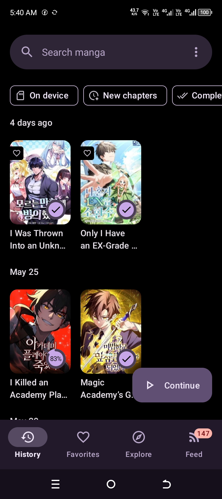
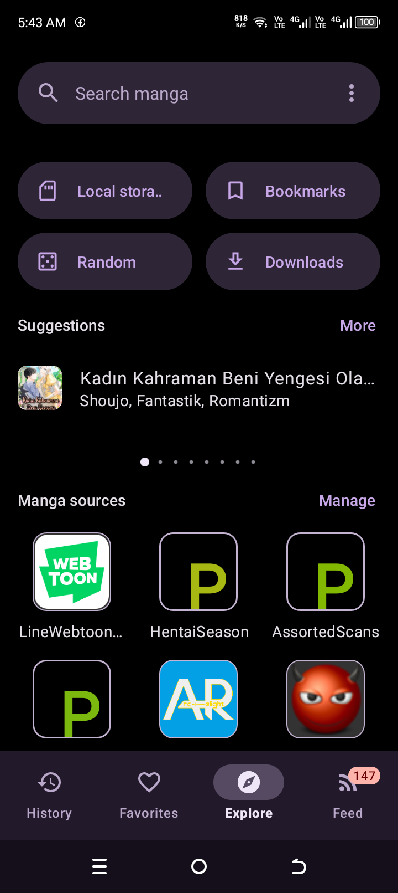
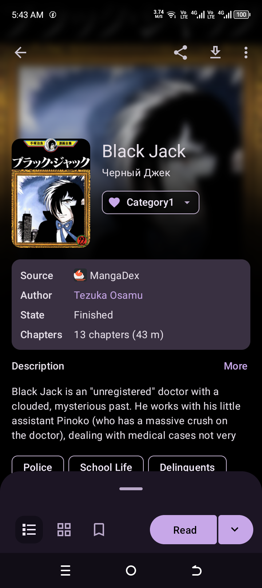
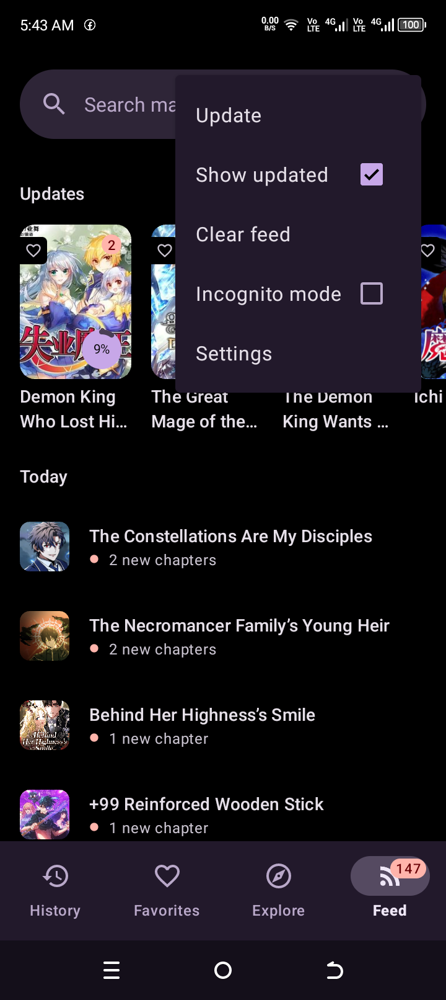
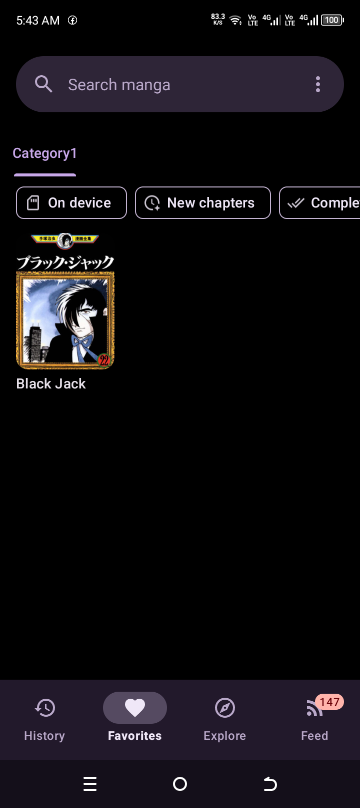

Downloaded-first chapter loading
Downloaded pages are treated as primary content. Network fallback should not fight the local library when chapters already exist on disk.
Koharu Miyo for Android
MIYO is an open-source comic and manga reader focused on offline reliability, parser extensibility, source-aware downloads, and practical native performance work.
Android 5.0+ · GPLv3 · Package org.koharu.miyo




Why this fork exists
MIYO continues the Kotatsu and Usagi lineage while pushing local reading, download diagnostics, C++ helper paths, and release automation into sharper focus.
Downloaded pages are treated as primary content. Network fallback should not fight the local library when chapters already exist on disk.
Download workflows account for cancellation, stuck providers, storage validation, and user-visible progress surfaces.
Source logic is kept separate from the reader where possible through parser infrastructure and guarded plugin imports.
Native helpers support image probing, archive work, and performance-sensitive paths without turning the app into a native rewrite.
Model packages are release assets, not invisible bloat. Users can keep refinement optional and inspect what they install.
MIYO is a rebranded continuation of Usagi, derived from Kotatsu. The website names that lineage directly.
App surface
The screenshots are not filler mockups. They show the real black and purple reading UI, bottom navigation, search surfaces, feed menu, title details, and source discovery flow.

Architecture
The public site mirrors the project shape: reader, downloads, sources, native helpers, releases, and credits each have their own page or section.